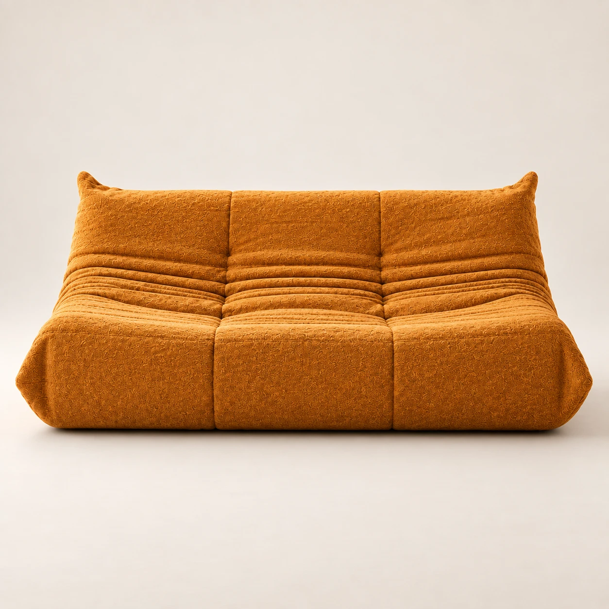
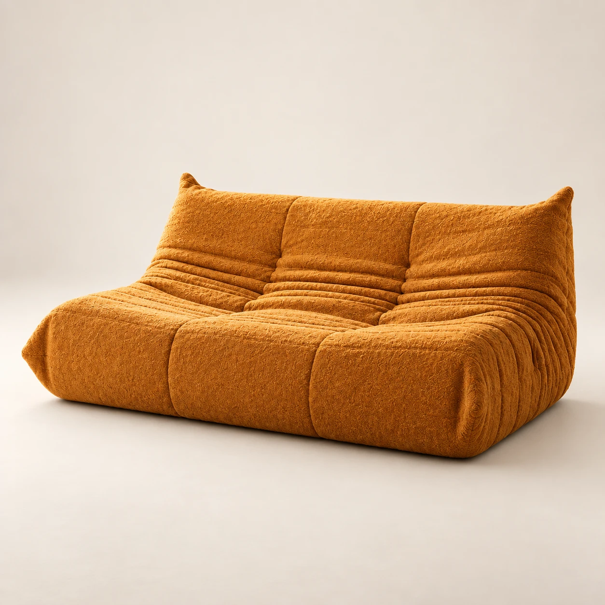
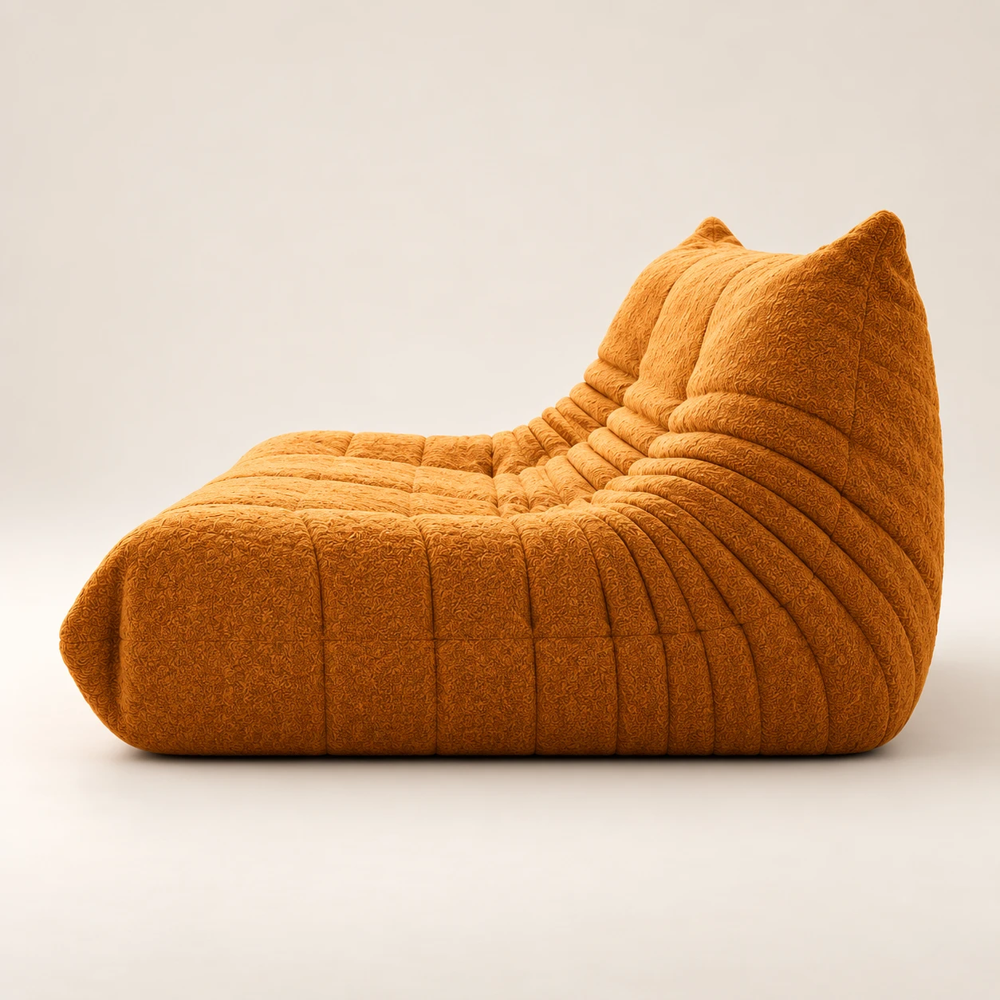
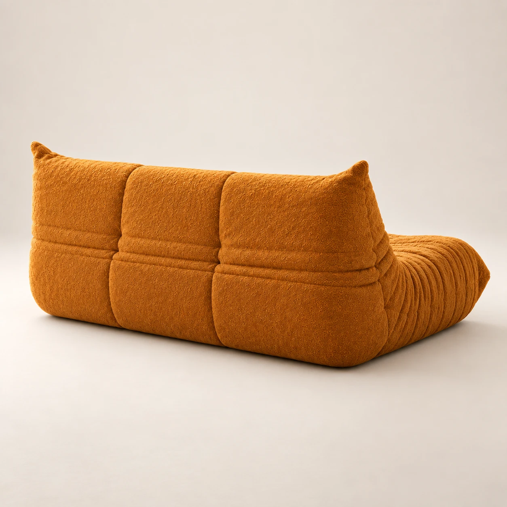
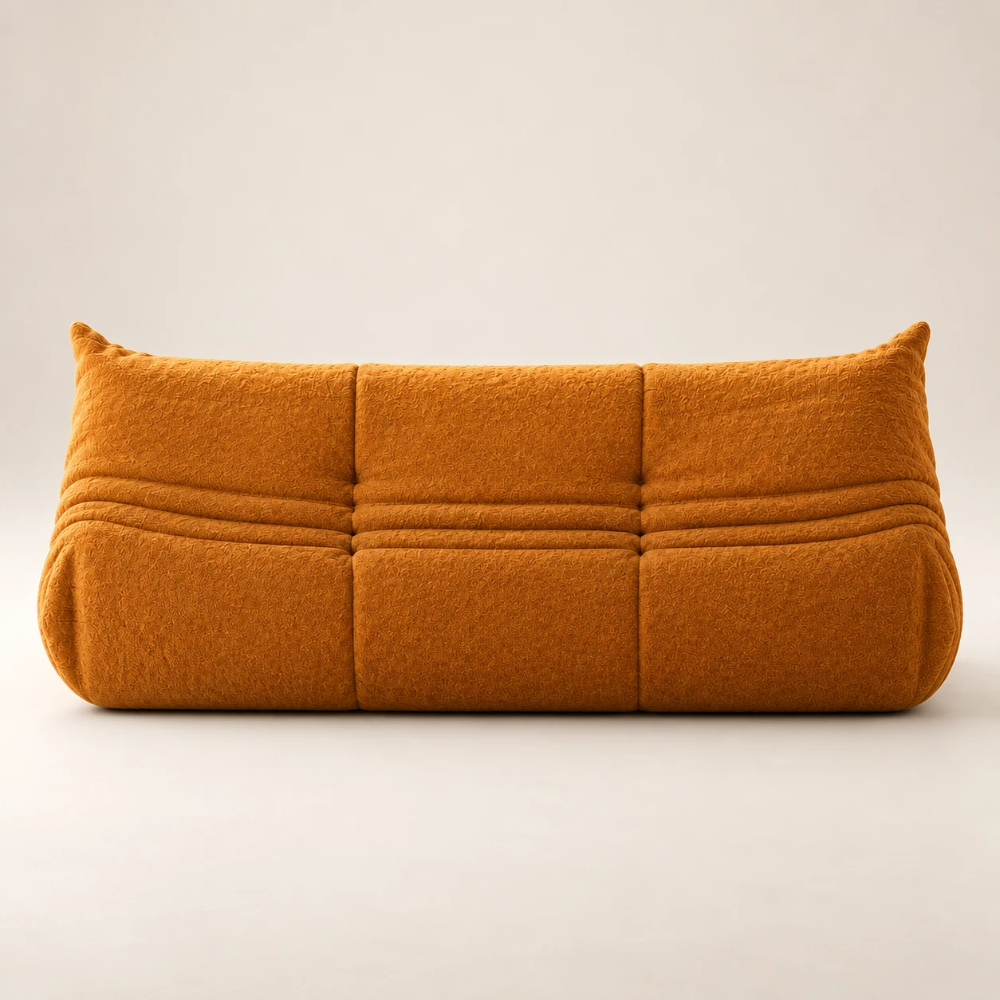
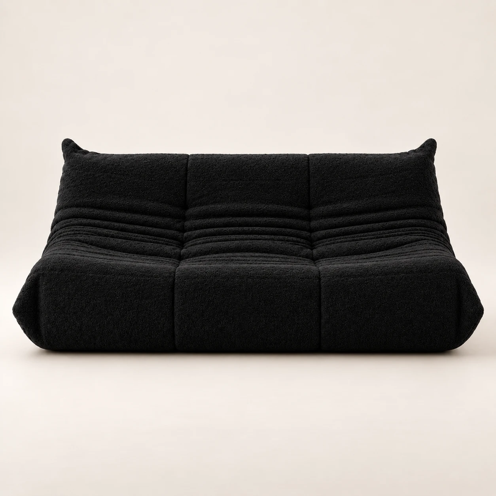
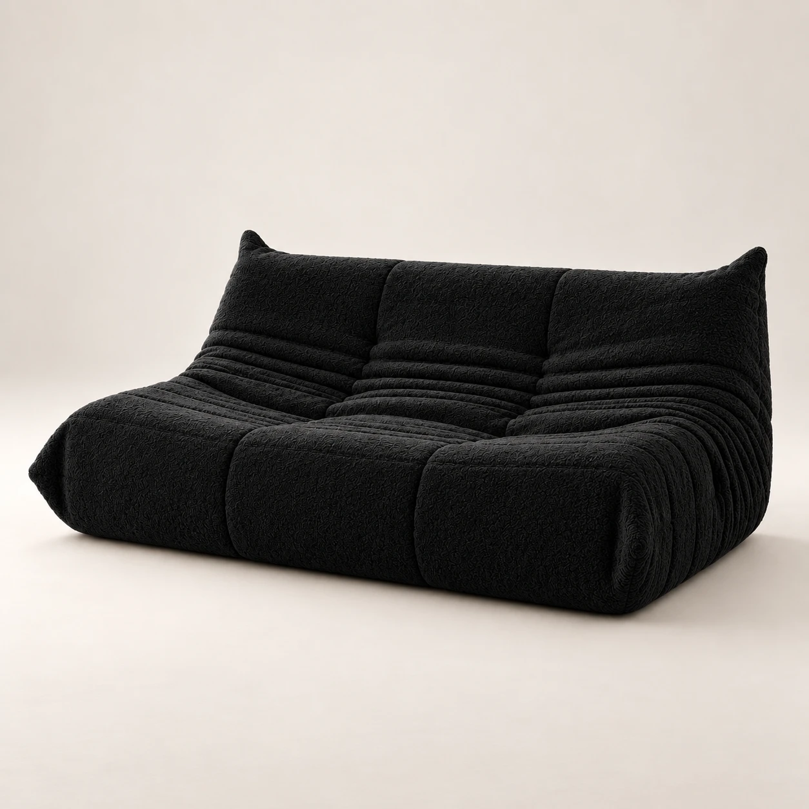
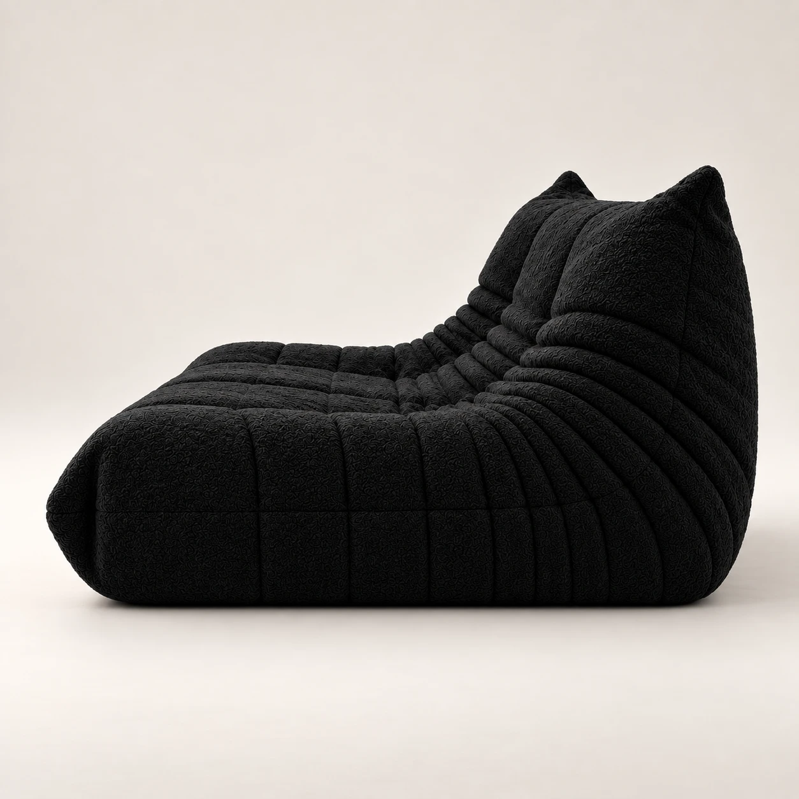
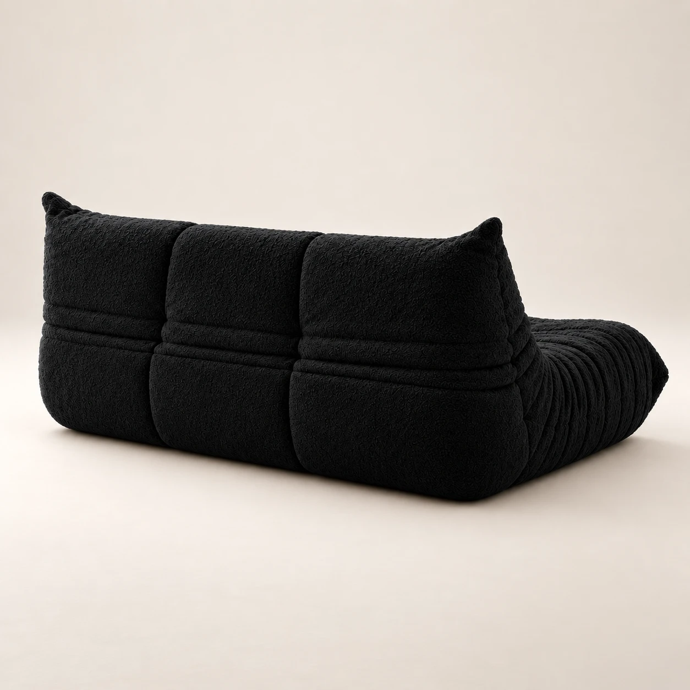
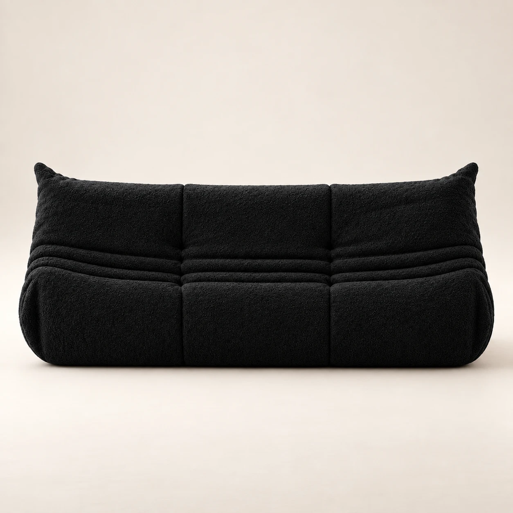

Viewing
Front
Living · Sofas
Dune low sofa
$4,570.00 AUD
A deep, low three-seater with no frame at all: layered, channel-quilted foam in a textured bouclé that softens the more it is used.
Colour · Saffron bouclé
- Dimensions
- 174 W × 102 D × 70 H cm
- Seat height
- 38 cm
- Delivery
- 4–6 weeks